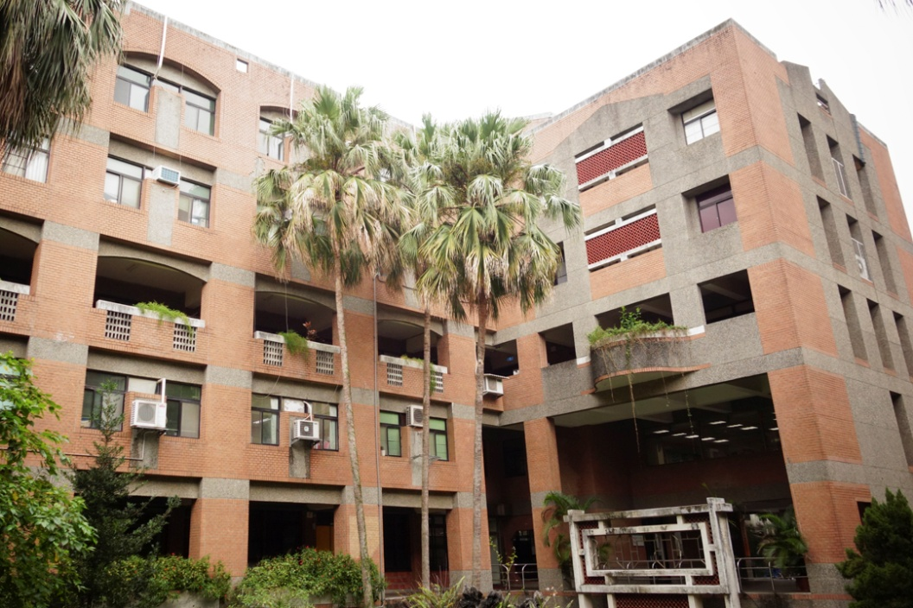

臺灣大學 生物產業傳播暨發展學系
臺北市立萬芳高級中學 周鈺傑
圖片來源：國立臺灣大學｜面試｜
一人十分鐘
面試題目
1. 自我介紹1分鐘。
2. 你是否在放假時有回去家鄉幫忙?
(因為我書審有提到故鄉麥寮的臺灣生菜村務農經驗)
3. 我看你具有很多人文社會的研究和具體成果，那你自然有沒有一些具體成果?
沒有的話也沒關係。
4. 我看你在科教館有長期的密切接觸和活動，是什麼因緣機會去參加的?
5. 我看你成績不錯，活動經歷也豐富，那你時間是怎麼規畫分配的?
6. 希望能展現你想進我們系的強烈企圖心。
7. 不知道接下來決議如何，如果這個管道沒有上，還是非常希望你能用其他管道進來，希望能再看到你。
面試心得
臺大與清大相比較為輕鬆自然，很像在聊天，沒那麼嚴肅。在我面前有一個超大倒數計時器，一進去坐下來看到有被嚇到，開始講第一個字便開始計時。
共有五位教授，座位成ㄇ字型，我的座位前方有大桌子，放有紙筆供問題記錄使用。我一進去就遞交三折頁（事前準備的），由工作人員發給教授，面試結束後還回。
整體面試感覺較輕鬆自然，不會太拘謹，與教授問答過程也很像在聊天，也就消除許多的緊張感。個人認為特殊選才的準備要比個人申請的強度再高一些，畢竟能符合申請資格的都有許多國際賽事、特殊經驗等等的，而不論是準備書審或面試時，都要知道自己的核心目標是什麼，照著核心目標走，才不會寫到後面迷失方向。
最後最重要的就是保持平常心，特殊選才畢竟是多一個管道，然而在準備特選時也同時要兼顧學測，因此這段時間學習時間分配和規劃是很重要的。
也預祝看到這篇文的考生們都能進入你們心中的第一志願！